Chatbots
Versátil para tarefas sistemáticas: programação e análise de dados.

Excelente para escrever, editar e organizar textos com clareza.

Útil para pesquisa, informação atualizada e geração de imagens.

Modelo chinês, com alternativa gratuita e de código aberto.

Buscador com IA que prioriza respostas acompanhadas de fontes.
Recomendação: vale pagar por pelo menos uma ferramenta — ChatGPT ou Claude — para ter mais capacidade e consistência.
Onde ligar o modo agente
Em ambos, o botão que muda tudo fica bem perto da caixa de texto.
Plugins e conectores
Além de conversar, dá para plugar o agente direto no Gmail, Drive, Notion, Calendar e dezenas de outros serviços — ele passa a agir dentro deles.
Série de reportagens sobre Epstein no Brasil
Exemplos de uso de agentes de IA em uma investigação


Raspagem de documentos e resumo por meio de Codex
O agente da OpenAI/ChatGPT
O que o Codex encontrou nos e-mails sobre o Brasil
Fiz a busca em jmail.world/search?q=Brazil. O termo retorna 2019 resultados, mas a maioria é ruído: newsletters, anúncios e sobretudo e-mails de mercado sobre CDS/títulos do Brasil.
- David Stern ↔ Jeffrey Epstein, 23/10/2017, no fio "Brazil".
Stern avisa que "Alex" está em Nova York e quer que Epstein "do Brazil". Relação possível: canal direto de acesso e intermediação.
- Alexandre Allard ↔ equipe de Epstein, 2017, no fio "Brazil".
Tentativa de marcar encontro entre NY, Europa e Brasil. Relação possível: contato de negócios ou investimento.
- Lesley Groff → Jeffrey Epstein, 05/11/2014, no fio "Paolo Sacchi from Brazil".
Groff pede que Epstein ligue para Paolo Sacchi, que está no Brasil. Relação possível: contato antigo/pessoal ou profissional prévio.
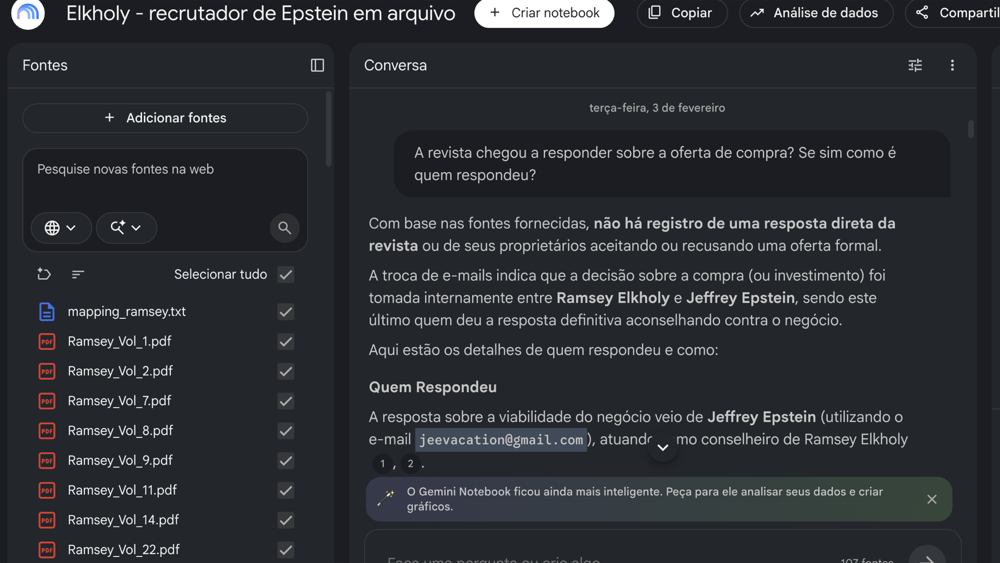
O Gemini Notebook é o novo nome do NotebookLM.
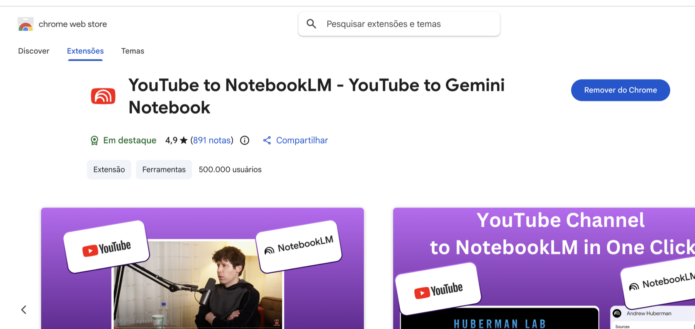
Uma extensão do navegador envia múltiplos vídeos de uma só vez para o NotebookLM — agora Gemini Notebook.
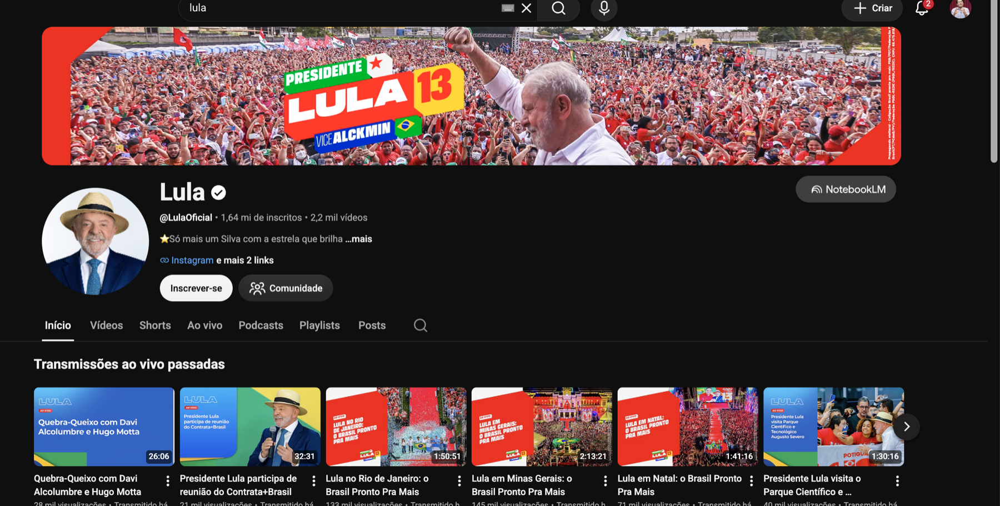
O botão “Notebook LM” na tela permite levar o conteúdo para a análise da ferramenta.
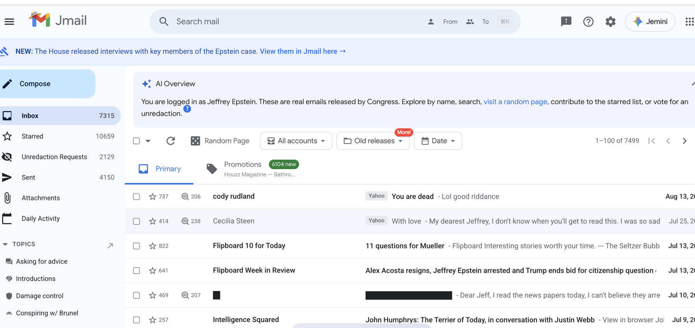
Na tela do Codex (agente de IA), foi possível entender a estrutura do Jmail — a base de emails de Epstein — e buscar diretamente por remetentes e assuntos.
IA para entrevistas
Do áudio bruto às contradições verificáveis
IA para caçar dados públicos
Uma nova porta de entrada para a apuração
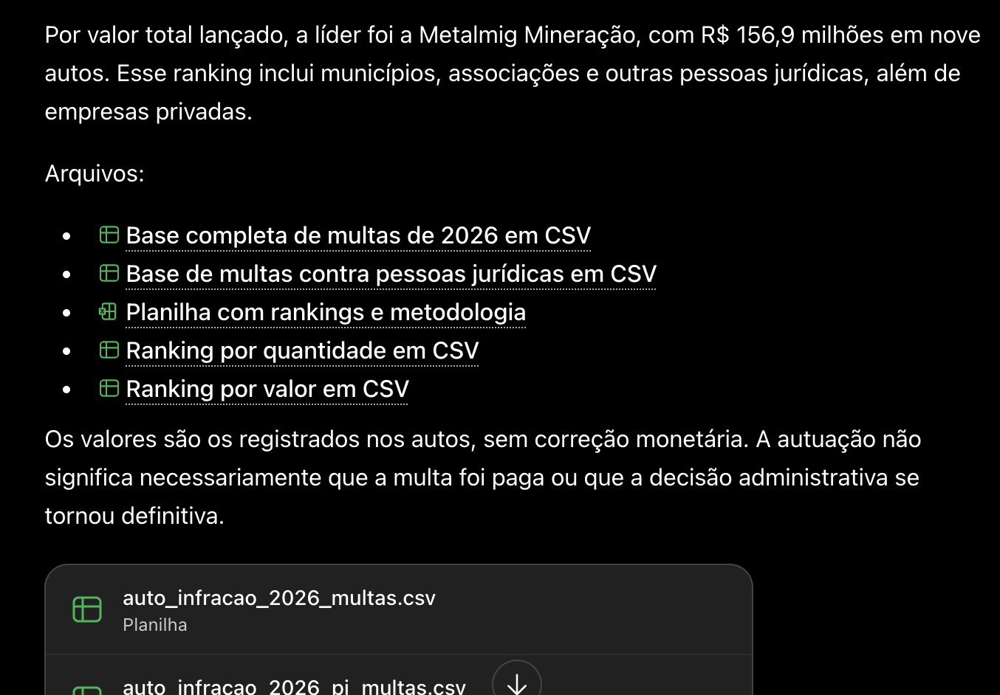
Comece perguntando onde estão os dados.
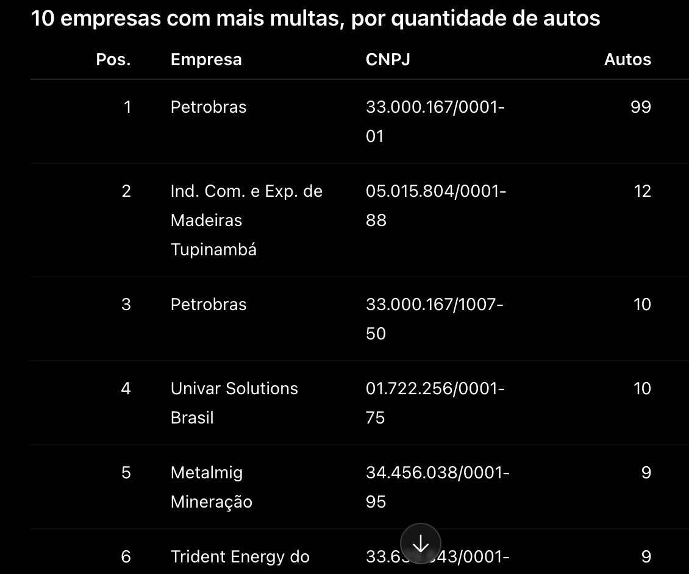
Depois, peça um recorte: onde houve a maior quantidade de multas?
Use o resultado como ponto de partida — e vá à fonte original.
Também funciona baixar o arquivo original (Ibama, TSE etc.) no seu computador e jogar direto na conversa com a IA.
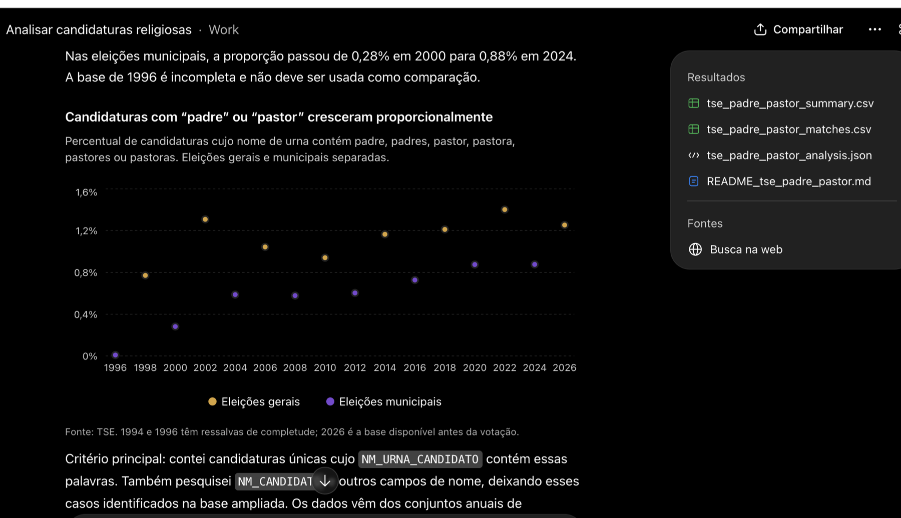
Peça sempre a fonte original; o ideal é saber refazer a análise, se necessário, com base em amostras.
IA para analisar documentos públicos / processos judiciais
IA para organizar informações
IA para encontrar personagens
IA para achar novos caminhos de apuração
Busca de conteúdos semelhantes
Pesquisar por títulos, hashtags ou até transcrição de vídeos — funciona melhor no YouTube.
Busca de especialistas, outros lados, fontes
Preparação para entrevista de emprego
Automatização de tarefas
Para cobertura específica das eleições
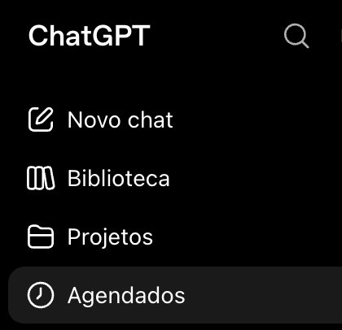
Defina a pergunta.
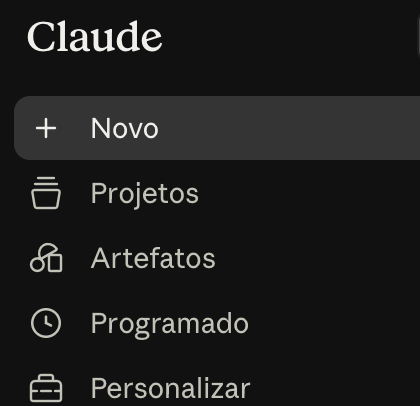
Agende a execução e receba o resultado.
A parte de agendamento é o que transforma uma pergunta em rotina.
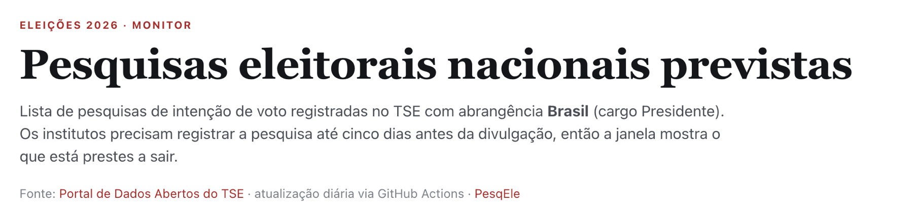
Baixar um arquivo, processar os dados e montar uma tabela.
Divulgação do seu trabalho
Extensões para o Chrome
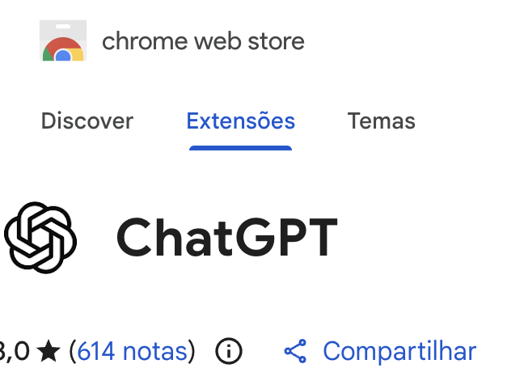
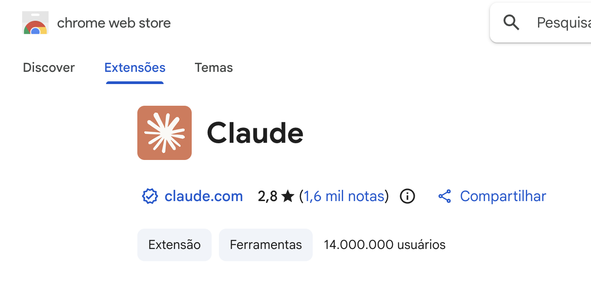
- Analisar textos na página
- Realizar tarefas como preencher formulários, agendar eventos
- Traduzir conteúdo
- Achar informações ocultas na página
IA para criatividade
Nem tudo é sobre trabalho
Cuidados com a IA
Os quatro encontros
Muito além do ChatGPT
Qual ferramenta usar em cada situação, como a IA acha dados e documentos escondidos, e fluxos com Codex/ChatGPT Work e Claude Cowork/Code — sem precisar saber programar.
Pororoca de ideias
Transformar aquela ideia maluca em protótipo: um jogo interativo, uma ferramenta que compara músicas, um portfólio diferentão.
Como não ser controlado pela IA
Como duvidar de uma resposta de IA e as formas que usamos para checar as respostas com responsabilidade.
Use a sua neurose ao seu favor
Atividades práticas para entender onde você está criativamente emperrado e como fazer uma ideia maluca virar reportagem.